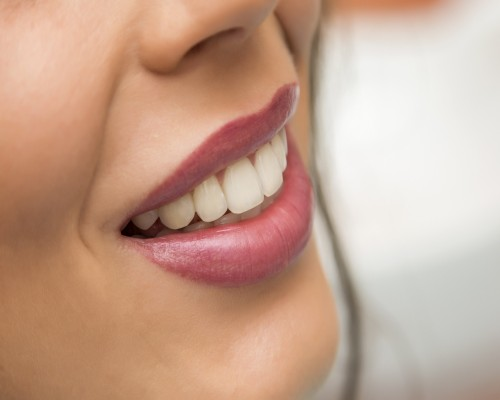
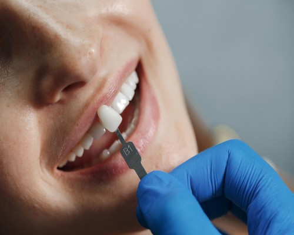
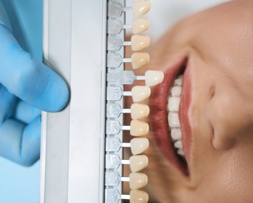

English
English
Lamine Diş-Gülüş Tasarımı, Estetiği-Holywood Smile Fiyatları İstanbul
Diş tedavisi denilince insanların aklına ilk olarak; diş ağrısı, diş eti çekilmesi, ağız kokusu, diş dizilimindeki çarpıklıklar, diş renklenmeleri, diş çürüğü, diş kaybı vb. hastalıklar gelmektedir. Bu hastalıklar tedavi edilmekle beraber, zaman içerisinde insanların dişlerinde biçim bozuklukları, diş sararması, dişler arası boşluk, diş taşı, dişlerde yamukluk, dişlerin az veya çok görünmesi, çarpıklık ve diş eti çekilmesi gibi çeşitli estetik problemler ortaya çıkabilmektedir. Bu estetik problemler, insanların psikolojilerini ve sosyal hayatlarını olumsuz etkilemektedir. Kişiler, kendi içsel dünyasındaki dışa vurumun en önemli göstergesi olan duygu durumlarını ifade eden gülüşlerini, ağızlarını kapatarak baskılamakta, kendine güvenlerini kaybetmekte, asosyal hale gelebilmektedirler. Bu sebeple, diş hekimliğinde diş tedavisinin yanında, diş estetiği de son yıllarda büyük bir önem kazanmıştır.
Aslında diş estetiği, bireyin gülüşüne yapılan sanatsal bir işlemdir. Son yıllarda gerçekleşen teknolojik ve bilimsel ilerlemeler sonucunda, daha güzel gülüş uygulamaları yapılabilmekte ve diş estetiği terimi daha sık bir şekilde duyulmaktadır. Sosyal meydanında etkisiyle gülüş tasarımı sadece sanatçıların, politikacıların, iş insanlarının yaptırdığı bir uygulama olmaktan çıkmış ve toplumun geniş kesimleri tarafından, sosyal hayatta kendini daha iyi ifade emek isteyen herkes tarafından tercih edilen, oldukça popüler bir uygulama haline gelmiştir. Diş estetiği denilince ilk akla delen uygulama, toplumda Hollywood Smile olarak da bilinen gülüş tasarımı uygulamasıdır. Bu yazımızda, estetik gülüş tasarımı konusu hakkında detaylı bilgiler sunacağız.
Gülüş tasarımı - Hollywood smile nedir?
Gülüş tasarımı; sağlıklı ve güzel bir gülümseme için, dişlerde ve dişetlerindeki bozuklukların, hasta talebi ya da ihtiyacına göre diş, ağız, çene yapısı, dudak ve yüz hatlarının birlikte ele alınarak, hastanın gülüşünün doğal ve güzel bir görüntüye kavuşturulduğu kapsamlı bir diş estetiği uygulamasıdır.
Gülüş tasarımı uygulamasında, tek ve standart bir tedavi yöntemi yoktur. Gülüş tasarımı aşamasında, her birey için o bireye özgü farklı uygulamalar gerçekleştirilir. Yani gülüş tasarımı, kişiye özgüdür ve kişiden kişiye değişmektedir. Bu amaçla gülüş tasarımı işleminde, en güzel ve doğal gülüşü elde etmek için gerekli aşamalar ve işlemler belirlenerek uygulamaya konulur.
Gülüş tasarımında, tüm sürecin basamaklarının en baştan planlaması yapılır. Son yıllarda geliştirilen 3 boyutlu teknolojileri ile de tedavinin planlanması aşamasında, sürecin sonucu hastaya görsel olarak gösterilebilmektedir.
Sağlıklı bir diş ve diş eti yapısı, esasında estetik bir gülüşün ana yapısını oluşturur. Sağlıksız bir diş ve dişeti, estetik görünüme sahip bir gülüş yapısı oluşturamaz. Bu kapsamda, gülüş tasarımı uygulaması ana olarak, beyaz estetik ve pembe estetik kısımlarından oluşmaktadır. Beyaz estetik, dişler üzerinde yapılan uygulamalar bütününü ifade ederken pembe estetik ise, diş etleri üzerindeki yapılan çalışmalara bütününü oluşturmaktadır.
Gülüş tasarımı neden önemlidir?
Gülüş tasarımı, kişinin duygularının dışa vurumu olan mimik ve gülüşlerine yapılan, sanatsal bir özelliğe sahip estetik bir tedavi uygulamasıdır. Estetik gülüş tasarımı ile kişiler, sadece doğal ve estetik bir gülüşü sahip olmanın dışında ayrıca kendi ruhi ve duygusal durumunu daha özgür ve rahat bir şekilde dışa aksettirerek kendinlerine olan güvenlerini arttırmaktadırlar. Artık özgürce gülümseyebilmekte, fotoğraflarda nasıl görünürüm endişesinden kurtulmaktadırlar. Güne başlarken, aynada kendi gülüşlerine baktıklarında, kendilerine olan inanç ve güvenleri artmakta ve güne motive olmuş bir şekilde başlayarak, sosyal yaşamda ve iş hayatınızda özgüvenli bireyler olarak hak ettikleri konumlara güçlü adımlarla yürümektedirler.
Gülüş tasarımı sadece estetik bir gülüş mü sağlıyor?
Tabii ki hayır. Güzel bir gülüşün yanında, daha sağlıklı bir ağız ve diş yapısına da kavuşacaksınız. Gülüş tasarımı ile;
- Diş eksiklikleri,
- Diş minesi aşınmaları,
- Kırık ve çürük dişler,
- Diş taşı oluşumu,
- Diş eti çekilmeleri ve kanamaları,
- Çarpık ve yamuk dişler,
- Renk değiştirmiş dolgular,
- Diş arası boşluklar gibi,
- Ağız dokularıyla tam uyumludur, sıcak ve soğuk hassasiyeti oluşturmaz,
sorunlardan kurtularak, daha sağlıklı bir ağız yapısına da sahip olacaksınız.
Gülüş tasarımı mı? Gülüş estetiği mi? Arasındaki fark
Gülüş estetiği ve gülüş tasarımı, birbiriyle karıştırılan iki farklı terimdir. Aslında bu iki kavram, birbiriyle sebep sonuç ilişkisine sahiptir. Gülüş estetiği, bireyin gülüş tasarımı işlemleri sonrasında ortaya çıkan son gülüşünün durumunu ifade ederken, Gülüş tasarımı ise, bireyin istemiş ve talep etmiş olduğu estetik ve doğal gülüşün gerçekleştirilmesi için gerekli olan iş ve işlemlerin bütününü ifade etmektedir. Kısaca gülüş estetiği, gülüş tasarımı(Smile Design) sonrası elde edilen sonuçtur.
Gülüş tasarımı ile neler yapılabilir? Yapılabilecek işlemler
Gülüş tasarımı ile aşağıda yer alan uygulamalar yapılabilir:
a. Dişin renginde iyileşme
Renkli amalgam dolgularınızı, doğal diş renginizle aynı renge kavuşturabilirsiniz. Diş beyazlatma ile dişlerinizdeki lekelerden kurtulabilirsiniz. Diş rengi, birçok prosedürün uygulanmasında(implant, porselen kaplama vb.) dikkate alınan önemli bir husustur. Rengini kaybetmiş bir diş, kişinin yaşlı bir ağız yapısına sahip olduğu hissini verirken, birbiriyle orantılı beyaz ve parlak dişler ise daha genç bir görüntü anlamına gelmektedir. Dişlerde oluşan renklenmeler, diş beyazlatma (bleaching) uygulaması ile ortadan kaldırılır ve daha beyaz dişler elde edilir. Bleaching uygulaması, tartar(diş taşı) temizliği sonrası uygulanan polisajdan farklı bir uygulamadır. Diş beyazlatma(bleaching) uygulaması ile kişinin diş rengi 2-3 kat daha beyaz ve parlak olabilmektedir.
b. Dişlerin hizalama ve düzeltilmesi
Çarpık ve yamuk bir yapıya sahip, aralarında boşluklar olan dişlerinizi, ortodonti ya da Invisalign tedavi yöntemiyle hizalanır ve düzeltilerek daha iyi bir şekle dönüştürülür.
c. Eksik dişlerin tamamlanması
Ağızda eksik olan dişler, hem gülüşünüzün görüntüsünü bozmakta hem de diş çürümelerine neden olabilmektedir. Bu eksik dişlerin implant, köprü ve takma dişlerle tamamlanması ile gülüş estetiği ve ağız sağlığı daha iyi bir duruma kavuşturulur.
d. Dişlerin uyumu
Kırık, çatlak ve eşit boyutta olmayan dişlerinizde, gülüş estetiğinizi daha iyi bir yapıya kavuşturmak için düzeltmeler uygulanabilir.
e. Dişlerin uzatılması
Yaşlandıkça insanların dişlerinde yıpranma artar ve kısalmalar görülür. Uzun dişler bireylere daha genç bir görüntüye sahip olmalarını sağlar. Bu kapsamda gülüş tasarımı uygulaması ile öndeki dişlerin porselen kaplamalarla uzatılması ve yeni bir şekil verilmesi, diş eti çizginizin düzenlenmesi, gülüş çizginiz ile dişlerinizin ne kadar uzun olacağının belirlenmesi gibi uygulamaların yapılması sağlanabilir.
f. Diş kaplamaları
Estetik bir gülüş elde etmek için, dişlerde çeşitli nedenlerle(çürük, travma vb.) oluşan madde kaybı, dişlerin üstlerinin metal yada metal olmayan maddelerle restorasyona tabi tutulması ile düzeltilebilir. Bu kapsamda zirkonyum, porselen kaplama en sık yapılan uygulamalardır. Böylece daha estetik gülüşler elde edilebilir.
g. Diş eti estetiği(Gingivektomi)
Dişeti gülüşü (gummy smile);Diş etlerinin, dişlerden daha ön planda yer alması yani gülüş sırasında dişetlerinin dişlerden daha fazla görünmesi durumudur. Diş etlerinin bu şekilde baskın olması ile dişlerin kısa görünmesi sorunu ortaya çıkar Bu durum, kişinin estetik gülüşünü bozar ve estetik olmayan bir yapının ortaya çıkmasına neden olur. Diş eti estetiği ile diş etlerinin, dişlere olan baskın görünümü azaltılarak, kişinin gülüşünün daha estetik olması sağlanabilir.
Gülüş tasarımı-Holywood smile nasıl uygulanır? Hangi aşamalardan oluşur?
Gülüş tasarım uygulamasında hastanın ağız, diş, dudak ve yüz yapısının durumuna göre aşağıdaki işlemlerden;
- Zirkonyum diş kaplama,
- Porselen kaplamalar,
- Diş beyazlatma (bleaching),
- Dişlerdeki yamukluk ve çarpıklıkların düzeltilmesi (Ortodontik tedavi),
- Diş ve diş eti arasındaki uyumun sağlanması,
- İmplant,
- Çürük diş ve diş eti hastalıklarının tedavisi,
- Eksik ve kırık dişlerin tedavisi,
- Dişlerin güçlendirilmesi,
- Dişler arası açıklıkların düzeltilmesi
- Ön dişlerin aynı biçimsel yapıda olması
- Gülüşün genç ve sağlıklı bir yapıya kavuşturulması
gibi uygulamaların hepsi yada bazıları, belirli bir program dahilinde uygulanır.
Gülüş tasarımı uygulaması ana olarak 2 adımdan oluşmaktadır. Bunlar;
1. Adım – durum Tespiti, Ppanlama ve tasarım:
Bu aşama hastanın gülüş estetiği beklentilerini anlamak ve buna uygun ihtiyaçlarına doğru cevap vermek için çok önemlidir. Çünkü hatalı ve yanlış bir planlama sonucunda ortaya çıkacak sonuçları geri dönüşü olmayan problemlere sebep olacaktır.
2. Adım - tedavi ve kalıcı estetik uygulaması:
Bu aşamada, bir önceki aşamada belirlenen uygulamalar için gerekli diş tedavileri ve estetik dokunuşlar uygulanmaya başlanır. Bunlar;
- Dişlerin temizlenmesi işlemi,
- Çürük dişlerin ve diş eti rahatsızlıklarının tedavisi,
- Ortodontik tedavi uygulaması,
- Cerrahi işlem sonrası iyileşmeden sonra, gerektiğinde diş beyazlatma işlemi,
- Estetik dokunuşlar(zirkonyum yada porselen kaplama, gülümseme çizgisi, diş oranları ayarlanması, diş uzunluğu vb. işlemler),
- Gerektiğinde dudak, yanak dolgusu gibi medikal estetik uygulamalar ile gülüşün daha iyi duruma getirilmesi,
- Gülüş Tasarım işlemi sonrası hastanın ağız ve diş bakımıyla ilgili ayrıntılı olarak bilgilendirilmesi.
Gülüş tasarımı esnasında mümkün olduğunca doğal yapı korunur ve dişlerde en düşük oranda madde kaybına neden olan yöntem uygulanır. Uygulamalarda kullanılan malzeme, dişin durumu, hastanın estetik beklentisi ve maliyete göre değişebilmektedir.
Gülüş tasarımı uygulaması ne kadar sürer?
Daha önce bahsettiğimiz gibi, gülüş tasarımı kişiye özgü bir uygulama olup, yapılan uygulamanın ne kadar süreceği, kişiden kişiye değişmektedir. Bu değişim kişinin özel taleplerine ve ağız ve diş sağlığının mevcut durumuna göre değişiklik göstermektedir. Çünkü bazı bireyler güldüğünde, ağzının sağ kısmı sol kısmında yukarıda ya da aşağıda olabilmekte, ağzındaki bazı dişler diğer dişlere göre kısa yada uzun olabilmektedir. Bu nedenle, her bireyin gülüş biçimi kendine has bir özelliğe sahiptir. Bundan dolayı, gülüş tasarımı uygulamasının standart bir yöntemi olmayıp, kişiden kişiye değişmektedir. Yapılacak değişiklikler; kişinin yüz, ağız, dudak yapısı ve hasta bütçesi de dikkate alınarak, hasta ve hekim arasında yapılan karşılıklı görüşmelerle belirlenir ve bir yol haritası çıkarılır. Böylece tahmini uygulama süresi de belirlenmiş olur.
Gülüşüm tasarımı tedavisi sonrası nasıl görüneceğim?
Yapılacak gülüş tasarımından istenen sonucun alınabilmesi için, tüm diş yapısı birlikte ele alınmakta ve yüz yapısı komple bir değerlendirmeye tabi tutulmaktadır. Son yıllarda, Diş Hekimliği Dijital Teknolojilerinde yaşanan büyük ilerlemeler sonrasında, uygulanacak tedavi sonrası hastanın nasıl bir gülüşe sahip olacağı, 3 boyutlu dijital görüntüler yardımıyla hastaya gösterilebilmektedir.
Gülüş tasarımı hakkında sık sorulan sorular
Holywood smile ya da gülüşü olarak da adlandırılan Gülüş tasarımı uygulaması, kişiden kişiye değiştiği için, ortalama standart bir gülüş tasarımı fiyatı vermek mümkün değildir. Çünkü kişinin durumu ve isteklerine göre fiyatlar farklılık gösterebilmektedir. Yine kullanılan malzemenin kalitesi de, gülüş tasarımı fiyat farklılıklarına neden olabilmektedir. İlk muayenede, alanında yetkin diş hekimi ve hasta arasında yapılan görüşme neticesinde, gülüş tasarımı için yapılacak tedavilerin belirlenmesi sonrasında gülüş tasarımı fiyatı netleşmektedir.
Gülüş tasarımı, bireylerin daha doğal ve estetik bir gülüşe sahip olmaları için aşağıdaki durumlarda olan bireylere uygulanabilir. Bunlar;
- Anormal şekilde diş lekelenmesi ve diş renk değişimi olan kişiler,
- Çarpık şekilde diş dizilimi olan kişiler,
- Diş eti görüntüleri bozuk kişiler,
- Diş boylarında farklılık olan kişiler,
- Ağzında diş eksikliği olan kişiler,
- Diş-diş eti arasında uyumsuz görünüme sahip kişiler,
- Ağız kapanma problemleri olan kişiler,
- Dişlerinin boylarında düzensiz görünüş ve kötü izlenim olan kişiler,
Bunların dışında da, gülüş estetiğinde farklı görünümler isteyen herkesin yaptırabileceği bir uygulamadır.
Gülüş tasarımı için, 20 ve üzeri yaşlarda olmanız uygun olmaktadır. Çünkü 20 ve altı yaşlarda beden gelişimi devam etiği için, yapılan uygulamalarla elde ettiğiniz gülüş estetiğiniz değişebilmektedir.
Lamine diş,Yaprak lamine, Kompozit lamina, Lamiasyon diş nedir?
Diş üzerinde en az törpüleme ile kaplama yapılan bir kaplama türüdür. Sağlıklı dişlerin üzerine uygulanan lamina porselen kaplama; kompozit kaplama, yaprak diş kaplama, yaprak diş veneers olarak da ifade edilmektedir. Lamine diş kaplama işlemi zaman içinde hasar görmüş ve estetik görüntüsünün yanında kullanışlılığını da kaybetmiş dişlerin sentetik materyaller ile kaplanmasıyla gerçekleştirilir.
Laminasyon diş kaplama doğal dişleriniz üstüne yapılan ufacık törpüleme ile diğer protez tedavilerine kıyasla dişlerinizi en iyi koruyan tedavi yöntemidir. Estetik bir gülüş sağlayan bu tedavi birçok sanatçı tarafından kullanılmıştır.
Kompozit lamine, bireyin dişlerine zarar vermeden; dişin renk tonunu değiştirmek, şeklindeki bozukluğu gidermek, dişi büyütmek, dişe estetik bir görüntü vermek amacıyla diş yüzeylerine kompozite malzeme ile yapılan estetik ve kozmetik restorasyondur.
Lamine porselen diş kaplama ile sigara, kahve, çay tüketiminin neden olduğu sararmış dişlerden kurtulmak mümkün. Bu uygulama sayesinde hastalar doğal ve beyaz görünümlü dişlere kavuşur. Lamine diş kaplama işlemi uzun süreli kullanıma uygundur. Yaprak lamine kaplama işlemi sonrası, dişler daha dayanıklı hale gelir.
Lamine diş uygulamasında en güzel sonuç için, kaplama işlemi uzman diş hekimleri tarafından diş kliniklerinde yapılmalıdır. Oldukça fazla dikkat ve beceri gerektirir.
Lamine diş kaplama neden yaptırılmalıdır?
Lamine diş kaplama, kaybedilme ihtimali olan dişlerin kaybedilmemesi için uygulanması gereken önemli bir tedavidir. Dayanıklılığını yitirmiş, aşınmış ve kırılma tehlikesi bulunan dişlerin kurtulmasına imkan tanır. Kişinin kendi dişlerini daha uzun yıllar kullanabilmesi olanağını sunar. Dişlerin daha hizalı, estetik bir hale getirmesinin yanı sıra; ağız ve diş sağlığına da katkı sağlayan bir uygulamadır.
Lamine – Lamina diş kaplama tedavisi nasıl uygulanır?
- Hastaya bu operasyonu yaptırma nedeni ve operasyon sonrası beklentileri sorulur. Konuşulanlardan yola çıkılarak yapılabilecekler hakkında hastaya bilgi verilir. Operasyon için kontroller ve testler yapılır. Ardından hastaya uygun modelleme yapılarak hastanın onayı alınır.
- Hastanın dişleri törpülenmeden lokal anestezi uygulanır. Bu sayede hasta törpüleme işlemi sırasında sızı, acı, ağrı hissetmez. Sadece kullanılan aletlerin sesini duyar. Aşındırma işlemi lamine kaplamanın dişe tam oturması için yapılır. Aşındırma işleminden sonra lamine diş yapılacak dişlerin kaplama ölçüsü alınır.
- Laboratuvar çalışmaları esnasında temizliği yapılmış, törpülenmiş dişlerin zarar görmemesi için geçici porselen diş kaplama takılır. Kalıcı yaprak porselenin gelmesini bekleyen hastanın konforu arttırılır.
- Ölçü alma işleminin ardından dişlere ikinci bir işlem yapmadan ortalama bir hafta beklenir. Bu bir haftalık sürede törpülenmiş dişlerde hassasiyet görülebilir.
- Dişe uygulanacak olan yaprak diş kaplama tabakası, oldukça ince olacak şekilde hazırlanır. İnce kaplama plakası ile hastanın doğal diş görünümüne en yakın kaplama elde edilir.
- Diş kalıpları hazır olunca bir prova yapılır. Yaprak lamine diş ile doğal dişlerin arasındaki renk uyumuna bakılır.
- Hasta ve doktor dişlerin görüntüsünün istenilen şekilde olduğunu onaylayınca lamine kaplama işlemine geçilir.
- İşlem yaklaşık 2 saat sürer. Lamine diş kaplamalarının yapıştırılma işlemi bittiğinde hastanın tedavisi tamamlanmış olur. Hasta uygulama sonrası günlük yaşantısına devam edebilir.
Lamine diş kaplama işlemi kaç seansta biter?
Hasta için ön hazırlık gerektiren durumların varlığına porselen lamine kaplama yapılacak diş adedine, dişlerin yapısına göre seans sayısında artış olsa da ortalama 3 seansta yaprak diş kaplama işlemi biter.
Lamine diş kaplama hangi durumlarda yapılabilir?
- Doğuştan gelen sebeplerle oluşmuş ön diş çarpıklıklarında, düzensiz uzama durumunda, çürüme nedeniyle ortaya çıkan şekil bozukluklarında estetik gülüş kazanmak için lamine diş kaplama uygulanır.
- Herhangi bir darbe, fiziksel travma geçirmiş ya da bir sebeple kırılmış olan dişlerin sağlamlıkları kontrol edildikten sonra onarılıp, eski doğal görüntüsüne kavuşturulmasında lamine diş kaplama uygulaması tercih edilir.
- Güzel bir gülüş, kusursuz, dengeli diş uzunlukları için dişlerin uzatılması istenildiğinde yaprak diş kaplama uygulanır.
- Beyazlatma işlemlerinden sonuç alınamadığı, koyu renk dişlere sahip olan bireylere uygulanır.
- Çürümüş ön dişlerde, çürüğün temizlenmesi ve dişte meydana gelen yıkımın düzetilmesi gerektiğinde lamine kaplama tercih edilir.
- Diş teli tedavisinin alternatifi olabilir. Ortodontik tedavileri estetik kaygılar, diş telinin bakımının zorluğu sebebiyle kabul etmemiş, dişleri ayrık, çarpık olan hastalarda hekim uygun gördüğünde laminasyon diş yapılır.
- Ortodontik tedaviye ek tedavi ihtiyacı duyan kişilere uygulanır.
- Diş minesi bozukluğu olan kişilerin doğal dişlerini uzun yıllar korumak için uygulanır.
- Dişlerinin şeklinden ve duruşundan memnun olmayan hastalarda sıklıkla kullanılan bir kaplama çeşididir.
Lamine diş kaplama bakımı nasıl yapılmalı?
- Lamine diş kaplama bakımı için dişler düzenli olarak diş fırçalanmalı, gargara yapılmalı, diş ipi kullanılmalıdır.
- Lamine yaptıranlar diş kaplama işlemi sonrası, gece diş sıkma, diş gıcırdatma problemi varsa mutlaka gece plağı kullanmalıdır.
- Lamine diş kaplamayı uzun yıllar kullanabilmek için tırnak yeme alışkanlığı bırakılmalı ve diş ile kabuklu sert yiyeceklerin kırılmamalıdır.
- Bakım amaçlı porselen lamine işleminden altı ay sonra diş hekimine gidilmeli ve lamine uygulamasının durumu kontrol edilmeli.
Lamine diş kaplama işlemi avantajları nelerdir?
- Dişler doğal yapısı bozulmadan tedavi edilir.
- Lamina diş kaplamada kullanılan ince porselen tabaka, çay, sigara, kahve lekeleri ile sararan dişlerin, sararma sorununu ortadan kaldırır.
- Tedavi sonucu lamine ışığı geçirdiği için doğal beyaz renge ve doğal diş formuna kavuşur. Dişlerde kaplama varmış gibi durmaz.
- Lamine kaplama tek bir dişe veya birden fazla dişe uygulanabilir.
- Kaplama kırılmaya karşı oldukça dirençlidir
- Diş kaplamasında pürüzsüz yüzey oluşturur.
- Lamine diş kaplama işleminde kullanılan yapıştırıcı, medikal ve güçlü bir yapıştırıcıdır. Bu sayede doğru uygulanan yaprak kaplama düşmez.
- Lamine diş kaplamada törpülenen miktar çok az olduğundan alışmak çok kolaydır.
- Lamine diş kaplamaları farklı bir bakım işlemi gerektirmez. Günlük ağız bakımı, kaplamayı uzun süre kullanmak için yeterlidir.
- Tedavi süresi kısa ve sonuçları uzun ömürlüdür. Lamine kaplama kolay kolay aşınmaz ve renk değiştirmez.
İstanbul lamine diş hakkında sık sorulan sorular
Lamine diş fiyatları hesaplanırken dikkat edilenler:
- Kullanılacak malzeme kalitesi, malzemeler ithal edilen ürünler olduğu için lamine diş dolar-eurodan kurları,
- Lamine kaplama yapılacak diş sayısı,
- Tedaviye başlanmadan gerek duyulan ön hazırlık işlemleri, diş eti bakımı, dolgu işlemleri gibi işlemlerin maliyeti,
- Lamine dişi işlemini uygulayan hekimin tecrübesi,
- Lamine dişin yaptırılacağı laboratuvar hizmetinin fiyatlandırması,
- Ödemenin peşin veya taksitli oluşu,
Lamine kaplama diş fiyatı konusunda değişikliklere neden olur.
Türk Diş Hekimleri Birliği tarafından alınan karar neticesinde her yıl diş tedavi ücretleri özel hastaneler ve devlet hastaneleri olmak üzere belirlenir. Uygulamanın yapılacağı klinik, fiyat politikasına uygun olarak, yapılan işlemi serbestçe fiyatlandırma hakkı vardır. Fiyat konusunda gerekli araştırmayı hasta yapmalıdır. Değişik semtlerdeki özel klinikler arasında dahi lamine diş fiyatı farklılık gösterebilir.
Normal dişler için yapacak bakım lamine dişler içinde gereklidir. Diş bakımına özen gösterildiğinde, ağız ve diş hijyenine dikkat edildiğinde yaprak kaplama dişin ömrü 15-20 yıldır. Ağız, diş ve diş eti bakımına dikkat edilmediği durumlarda kaplamanın ömrü 5-10’yıla kadar düşebilir.
Doğru yapılan lamine kaplama diş düşmez.
Lamine kaplama dişler kalıcı dişleri çıkmış herkese yapılabilir. Fakat yaprak porselen diş işleminde törpüleme çok az olacağı için önceden porselen, zirkonyum gibi kaplama tedavisi olmuş kişilere bu tedavi uygulanamaz.
Laminate veneer dişler en yüksek kalitede seramikten yapılır. Lamina dişler renk ve parlaklıklarını kaybetmez. Sigara, çay, kahve gibi diş sarartan yiyecek ve içeceklerden etkilenmez. Lamine diş kaplaması yapılmış bir dişte sararma gözlendiyse bu hastanın dişin canlılığını yitirmesinin sonucu dişin kendisinin sararmasıyla meydana gelir.
Eksik dişiniz varsa, o boşluğu doldurmak için implant veya zirkonyum köprü yapılabilir. Laminate Veneer ise tek tek dişlerin yüzeyine tatbik edilir tek dişe de uygulanabilir.
Evet. Ön dişlerde büyük dolgu ya da çürük olması halinde kompozit lamine uygulanabilir.